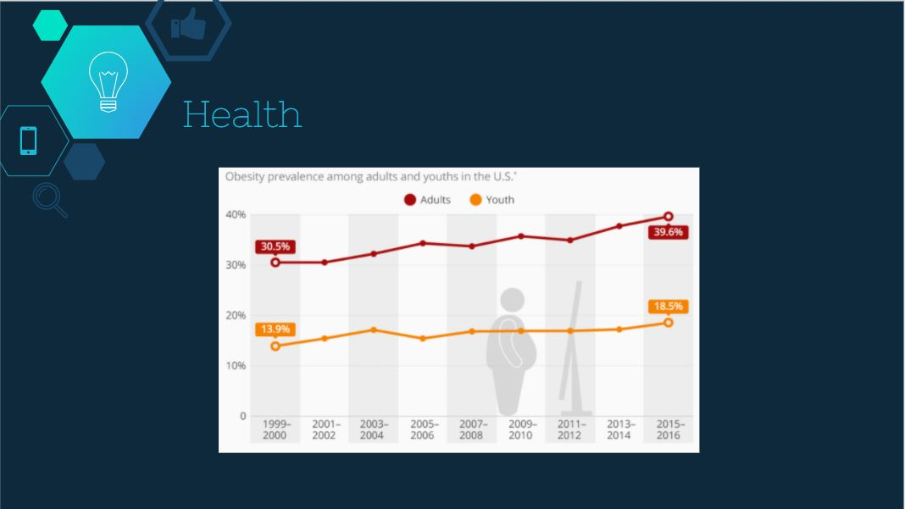

Los angeles June, 2017
Being away from family for most of my life span I have always craved for home cooked meals. Is it healthy? Is is better?
This is an initiative to prevent lot of things that going around. Looking at the world currently! We end up eating fast food or easy to cook meals when we dont have time, also lot of the food gets waste given in restaurants or in home. This platform will help motivating more home cooked meals, which infact are more healthy and prevent wastage of food that we throw away if we cook extra. Also, people living away from family can get family touch in having meals.
Problem
Statistics
Health
"Home cooked meals are the answer"
Tarun